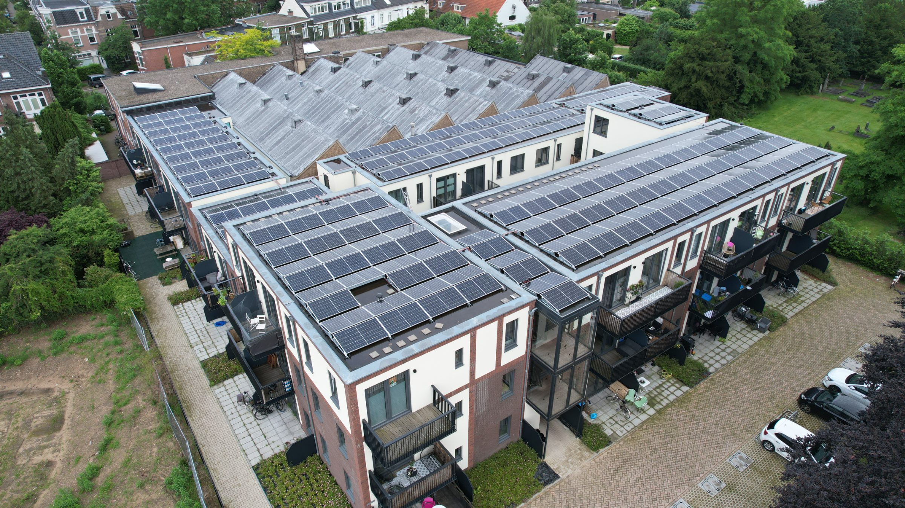

Woningcorporaties en vastgoedeigenaren staan voor een dubbele uitdaging: bewoners verwachten lagere energiekosten, terwijl regelgeving en verduurzaming steeds hogere eisen stellen. Vibe Energy maakt uw woningen toekomstbestendig — zonder complexe losse verduurzamingsprojecten.
Verhuurverbod, energiearmoede en WWS-puntenaftrek raken portefeuilles met E-, F- en G-labels nu al. Wat een rapportageverplichting lijkt, is in werkelijkheid een rendementsvraagstuk.
Sociale huur met label E, F of G mag vanaf 2028 niet meer verhuurd worden; particuliere huur volgt. WWS-punten worden nu al afgetrokken.
2028 · verhuurverbodBijna 600.000 huishoudens zitten in energiearmoede — vooral in slecht-gelabelde huur. Klachten lopen tot in de gemeenteraad.
600k huishoudensLabel E kost 5 WWS-punten per woning, F tien, G vijftien. Op 1.000 woningen is dat structureel inkomsten weg.
−15 punten bij label GCollectieve verduurzaming met warmtepompen en laden vraagt vermogen — terwijl verzwaren jaren duurt of niet kan.
Capaciteit op slotHonderden woningen verduurzamen vraagt één schaalbare aanpak, niet honderd losse projecten.
Eén aanpak nodigVerduurzaming strijdt met onderhoud en nieuwbouw om dezelfde euro's uit hetzelfde plafond.
Capex schaarsVanaf 2028 mag slecht-gelabelde sociale huur niet meer verhuurd worden — leegstand of gedwongen ingreep.
WWS-puntenaftrek verlaagt de maximale huur per woning — structureel rendement dat nu al wegvalt.
Hoge stookkosten en klachten over schimmel en comfort zetten de relatie met bewoners onder druk.
Eigen opwek op daken verlaagt woonlasten en tilt het energielabel — collectief geëngineerd.
Meer →Van E/F/G richting B — verhuurbaarheid geborgd, WWS-punten terugverdiend.
Meer →Vibe financiert en realiseert portefeuillebreed — één aanpak, geen eigen investering.
Meer →Meerdere blokken als één gestuurd systeem — gedeelde capaciteit, schaalbaar.
Meer →Gemiddelde labelsprong per woning — richting B, met verhuurbaarheid geborgd.
gemiddeld · per ingreepLagere energiekosten per woning per jaar door eigen opwek en betere isolatie van verbruik.
indicatief per woningEen betere labelklasse herstelt de WWS-puntenaftrek — direct herstel van huurwaarde.
per labelsprongPortefeuillebreed via exploitatie — Vibe financiert, u verduurzaamt zonder eigen capex.
per situatieEén aanpak, niet honderd losse projecten. We engineeren per blok en sturen centraal via het EMS.
Blok → portefeuilleLagere woonlasten en comfort voor bewoners; hogere labels, herstelde WWS-punten en assetwaarde voor u.
Lasten ↓ · waarde ↑Via exploitatie financiert Vibe de verduurzaming portefeuillebreed. Uw budget blijft voor de kernactiviteit.
€ 0 capex mogelijkEen quickscan op uw portefeuille geeft het snelst een concreet beeld per blok.
Stel uw vraagWij analyseren uw complexen, energielabels en verduurzamingsdoelen en laten zien welke aanpak de grootste impact heeft op woonlasten, regelgeving en rendement.